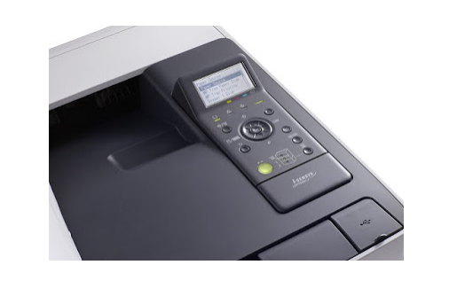
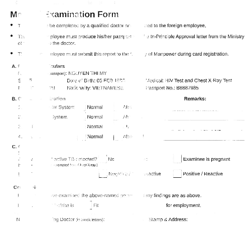
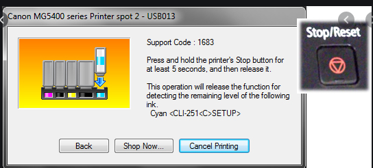
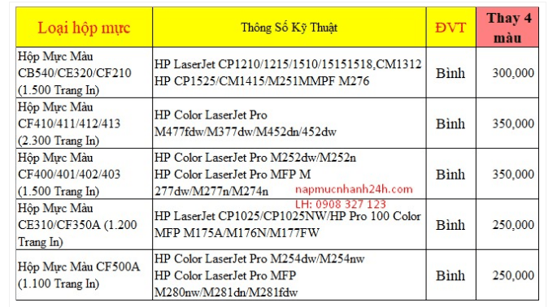

Cách Nhận Biết Mực Máy In Laser Màu Sắp Hết
Mực máy in laser màu sắp hết khi nào?
Để nhận biết mực máy in laser màu sắp hết khi nào còn tùy thuộc vào dòng máy in mà bạn đang sử dụng, chúng ta chia làm 2 dòng máy bình dân và cao cấp.
– Với các dòng máy bình dân như Canon LBP 2900, 3200, các dòng máy in HP Jet1105 chẳng hạn đều không có màn hình hiểu thị hay thông báo nào cho bạn biết được máy in sắp hết mực. Và cách phát hiện chúng ta chỉ có thể biết qua việc các bản in bị mờ, mực trên chữ không đều nhau và không cố định các vùng ở mỗi lần in.
– Với các dòng máy cao cấp: Các dòng máy in laser trắng đen cao cấp như Canon Imageclass LBP251DW hay LBP8780X đều được trang bị màn hình LCD và qua đó bạn có thể xem được lượng mực còn lại là bao nhiêu, tất nhiên lượng mực còn lại không bao gồm lượng mực tiêu chuẩn của hãng cho phép. Đây là lượng mực theo quy định của hãng khi bạn in để bảo vệ máy cũng như chất lượng bản in.
4 Cách để nhận biết khi nào cần thay mực đổ cho máy in laser màu
1. Các dòng máy in đơn chức năng và đa chức năng đời mới mà có màn hình LCD hiển thị, sẽ có các dòng thông báo bằng tiếng Anh sau xuất hiện trên màn hình, các bạn có thể đọc được
- Toner Low.
- Replace Toner.
- Replace Toner Cartridge.
- Toner Empty.
- Toner Ended.
- Toner Exhausted.

2. Các dòng máy in Brother, Canon, HP không có màn hình LCD hiển thị nhưng có đèn LED cảnh báo thì khi máy in hết mực sẽ xuất hiện đèn cảnh báo màu xanh hoặc màu đỏ.
3. Các dòng máy in lazer đời cũ không có màn hình LCD hiển thị hay đèn LED cảnh báo như Canon 2900, Canon 6030, HP 1101, HP 1102… thì để nhận biết khi nào cần đổ mực máy in, chúng ta phải dựa vào các dấu hiệu sau xuất hiện trên bản in
- Bản in trắng tinh, hoặc bản in bị mờ.
- Bản in xuất hiện một vệt trắng chạy dài từ trên xuống dưới nằm giữa bản in (do mực hết không đều nhau).
- Bản in xuất hiện nhiều vệt đen bẩn chạy dài từ trên xuống dưới nằm giữa hoặc hai bên cạnh bản in (vệt đen này xuất hiện là do mực in trong hộp mực đã hết, làm mực thải bị tràn ra ngoài. Gây ra vệt đen trên giấy in và mực cũng tràn rất nhiều vào trong máy in).

4. Các dòng máy in Lazer màu hay máy in phun Canon, máy in phun Epson, máy in phun Brother, máy in phun HP
- Nếu dùng hộp mực chính hãng, khi máy in gần hết mực sẽ xuất hiện các dòng cảnh báo trên màn hình máy tính khi bạn xuất lệnh in.
- Nếu dùng bộ tiếp mực ngoài, thì sẽ không có các cảnh báo trên màn hình. Cách đơn giản nhất để nhận biết khi nào cần đổ mực cho máy in là nhìn vào hộp chứa mực của bộ tiếp mực ngoài mà bạn gắn cho máy, hết mực màu nào thì bổ sung thêm mực màu đó.

Khi sử dụng máy in, bạn hãy luôn kiểm tra và quan sát quá trình sử dụng mực của máy in. Các lỗi có thể xảy ra thường xuyên nếu chúng ta không biết sử dụng đúng cách và không biết sửa lỗi kịp thời. Tránh tình trạng mực máy in laser hết làm ảnh hưởng tới tiến độ làm việc.
Bảng giá nạp mực máy in laser tận nơi
Sau đây là Bảng báo giá dịch vụ nạp mực in tận nơi của Mực In Trường Phát

Cách bảo quản và sử dụng mực máy in laser đúng cách
Mực in sau khi được bơm vào máy cũng cần được bảo quản và sử dụng đúng cách mới mang lại hiệu quả cao và tiết kiệm hơn.
– Vệ sinh máy in thường xuyên: tháo hộp mực cất đúng cách, hút bụi, giấy vụn bên trong máy. Các chuyên gia đã chỉ ra rằng 80% sự cố của máy in là do vệ sinh kém, môi trường nhiều bụi.
– Khi máy bị kẹt giấy, lập tức lấy hộp mực cất trong hộp tối, tránh ánh sáng, rút giấy thuận chiều trang giấy đi tới.
– Khi trang in có vệt mờ dọc, lấy hộp mực và lắc đều, đây có thể là dấu hiệu tình trạng hộp mực in sắp hết, bạn chỉ có thể in thêm vài chục trang giấy. Để chính xác hơn, bạn có thể cân hộp mực để kiểm tra.
– Không nên sử dụng giấy quá mỏng, giấy quá xấu, các loại giấy thô còn sót tạp chất có thể làm xước các trống, tạo các lỗi không thể khắc phục được trên trang in. Nên sử dụng giấy in có tịnh lượng 70 gram /m2 trở lên là tốt nhất .
– Không nên tắt máy in trong giờ làm việc vì muốn tiết kiệm điện. Độ ẩm không khí cao cũng là nguyên nhân làm mực in vón cục, gây trục trặc máy in.
– Bảo trì máy in, hộp mực đúng cách bạn có thể tái đổ hộp mực đến 4 lần, tiết kiệm được một số tiền không nhỏ.
Mẹo Xử Lý Máy In Sắp Hết Mực
Cách xử lý tạm thời máy in sắp hết mực chúng tôi vừa nói ở trên là lắc hộp mực. Tuy nhiên cách này cũng chỉ giúp bạn có thêm vài chục bản in nữa mà thôi. Còn biện pháp tốt nhất vẫn là tiến hành thay mực mới.
Trên đây là 4 cách giúp bạn nhận biết thêm về dấu hiệu máy in sắp hết mực, cũng như cách xử lý khi gặp các tình huống trên. Để giúp bạn đọc có thể tự mình lựa chọn phương án tốt nhất. Tránh trường hợp vì máy in sắp hết mực mà làm ảnh hưởng đến công việc của mình.
Đừng quên liên hệ cho Mực In Trường Phát khi các thiết bị in ấn của bạn xảy ra các vấn đề như hết mực, hư hỏng,… Chúng tôi sẽ nhanh chóng khắc phục sự cố giúp bạn tiếp tục hoàn thành các công việc liên quan. Với giá cả hợp lý, chế độ bảo hành hậu mãi uy tín Mực In Trường Phát mong muốn được phục vụ tất cả quý khách hàng.
Cần nạp mực hoặc sửa máy in tận nơi? Mực In Trường Phát có mặt trong 30 phút tại TP.HCM — in test trước khi tính tiền, bảo hành 1 tháng.
0908.327.123 · 0819.007.394 (Zalo cả 2 số)